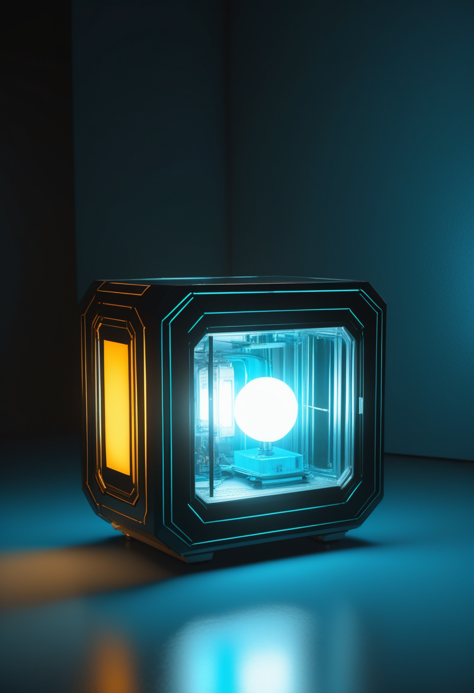
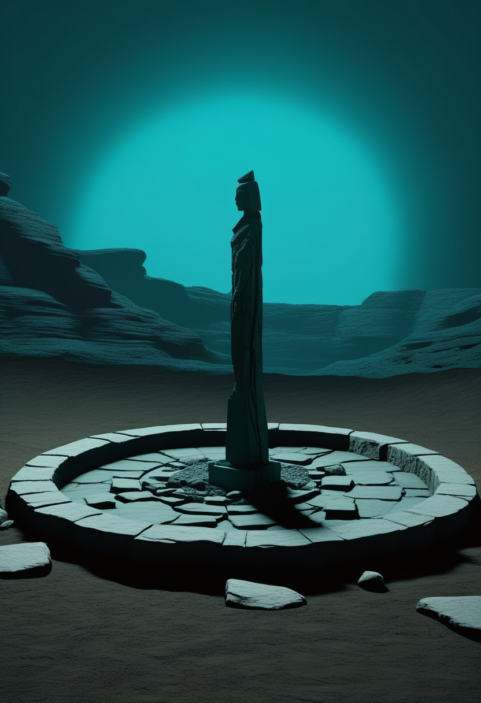

厚生労働省が公表した第46週データで、国内インフルエンザは定点11.94人と4週連続の増加に入り、北海道は警報レベルの目安を超えた。コンゴ民主共和国のエボラは週400〜500例の高止まりが続き、米国では今季初のオレゴン州ヒトH5N1感染も確認された。中国・北京ではBCI(脳機接口)産業の国レベル報告書づくりが進み、米国の神経科学会議では麻痺患者の『声』と『文字』を取り戻す技術が相次ぎ報告された。量子分野ではGoogleが文脈依存性という量子力学の根本原理を大規模検証し、イタリアの新興企業は室温で動く光量子コンピュータ試作機を発表。パリ近郊とペルー・ナスカでは、それぞれ6,500年前の巨石記念物と1,600年前の珍しい埋葬が姿を見せた。
厚生労働省が11月20日に公表した第46週(11月9〜15日)の全国データでは、定点医療機関当たりの報告数は11.94人で、前週の11.00人から増加し4週連続の増加となった。全国の報告数は4万4,563人で前週比6.9%増。都道府県別では北海道が30.63人で最多となり、警報レベルの目安(30)を初めて超えた。宮城・福島・岩手など26道府県が注意報レベル(10)を上回っている。前年同期(37.73人)に比べればなお低い水準だが、検出ウイルスは直近(第41〜45週)でAH1pdm09型が96%を占め、本格的な冬を前に地域差が広がっている。
argenxは11月3日、筋肉と神経のつなぎ目(神経筋接合部)に働くMuSK作動薬アディマネバート(adimanebart)の第2相試験『SPARKLE』について、EUでの治験申請を再提出したと発表した。規制当局の判断は2027年初めの見込み。対象は5歳以上18歳未満のSMA患者で、既存のSMN2標的治療に上乗せして点滴投与する二重盲検・プラセボ対照試験(約60人規模)。SMN補充とは異なる『神経筋接合部』からのアプローチとして、既承認薬とは別の角度からSMAに迫る開発が欧州で進んでいる。
SMA治療薬の開発は、SMN遺伝子を補う主流のアプローチに加え、神経と筋肉のつなぎ目という別の場所を狙う薬が着実に段階を進めている。本号ではゾルゲンスマの腫瘍調査とアピテグロマブのEU申請経緯について、前号までの既報から新たな事実を確認できず見送った。
中国信息通信研究院(CAICT)が主催する『2026脳機接口大会』が北京市昌平区で11月19〜22日に開かれた。11月21日の主フォーラムでは、CAICTと脳機接口産業連盟が世界約1,000社のデータを分析した『脳機接口創新発展研究報告(2026)』を発表する予定と報じられている。前号では大会の開催のみを伝えたが、主催者と報告書の名称が今回判明した。報告書の実際の発表内容そのものは本号の時点では確認できていない(要確認)。
米国神経科学会(Society for Neuroscience)の年次大会『Neuroscience 2026』に向け、11月17日に発表された研究概要によると、カリフォルニア大学デービス校のMaitreyee Wairagkar氏の研究チームは、音の高さ(ピッチ)の変化を再現できる合成音声BCIを開発し、麻痺患者の聞き取りやすさを改善し歌うことも可能にしたと報告した。マサチューセッツ総合病院のDaniel Rubin氏は、完全な『閉じ込め状態』にある患者が、脳活動から意図した動きを解読するBCIで1年以上独立したコミュニケーションを続けていると報告。ジョージア工科大学・エモリー大学のChethan Pandarinath氏は、脳活動を文字に変換する携行型BCIがiPhone上でも正確・効率的に機能すると報告した。いずれも学会発表の概要段階で、精度や速度の具体的な数値は示されていない(要確認)。
中国は国レベルの産業報告書づくりで『臨床から量産』へ、米国の学会発表は『声』『文字』『長期の安定した対話』という3つの違う道からBCIの実用化に迫っている。いずれも具体的な数値の検証はこれからの段階。
厚生労働省発表の第46週(11/9〜15)データでは、全国の報告数は4万4,563人で前週(4万1,071人)から6.9%増加。都道府県別では北海道が30.63人で最多となり、警報レベルの目安(30)を超えた。宮城・福島・岩手などが続き、26道府県で注意報レベル(10)を上回っている。直近(第41〜45週)の検出ウイルスはAH1pdm09型が96%を占める。前年同期(37.73人)より低い水準だが、4週連続の増加という流行拡大の局面にある。
米CDCの11月20日更新によると、コンゴ民主共和国のブンディブギョ型エボラは11月18日時点で確定1万1,680例・確定死者5,715人となった。前号で報じたCDC 11月17日時点値(確定11,645例・死者5,683人)から+35例・+32人。ECDCの集計は11月16日までのデータで1万1,504例・5,630人と、集計の締め日の違いによるずれが続いている。WHOは毎週400〜500例規模の新規報告が続いているとし、確定死者の3分の2は治療センターの外で亡くなっていると説明。UNICEFは5歳未満の確定患者の72%が死亡したとしているが、この数値は要確認。
オレゴン州保健局は11月19日、州内で2026年初めてとなるヒトの高病原性鳥インフルエンザ(H5N1)感染を確認したと発表した(州公衆衛生研究所の確定は11月18日)。感染はモロー郡の酪農場で起きた牛の集団感染と関連しており、この牛群は州の定期的な生乳検査で見つかった。州は一般へのリスクは極めて低いとし、家族には予防的に抗ウイルス薬オセルタミビルを提供した。前号既報のワシントン州ヤキマ郡に続き、米北西部で乳牛経由のヒト感染が続いている。
国内インフルは北日本から先行して拡大し、北海道の警報レベル入りは他地域の今後数週を占う目安になる。エボラは高止まりが続き、米国では乳牛経由のヒトH5N1感染がオレゴンにも広がった。
Google Quantum AIは11月19日、量子力学の根本的な性質『文脈依存性(contextuality)』を大規模に検証した成果がScience誌の表紙を飾ったと発表した。量子チップWillowで『マジックスクエア』と呼ばれる協力ゲームを実行し、勝率98.3%と古典的な限界(88.9%)を上回った。最大105量子ビットまで規模を拡大したが、その規模での古典との比較は未証明の数学的予想に依存しており、一般的な『量子優位』の証明そのものではないとの指摘もある。

イタリアの新興企業Rotoniumは11月23日、室温で動作する『実効4量子ビット』の光量子コンピューター試作機を発表した。極低温の冷却設備を必要としない光量子方式を採用しており、実用化すれば量子コンピュータの設置・運用コストを大きく下げる可能性がある。ただし企業側の発表であり、独立した第三者による検証はまだない。CERNなど大型研究機関からの11月の新発表は本号では確認できなかった。
量子分野では、Googleが量子力学の根本原理そのものの大規模検証に進み、Rotoniumは室温動作という実用面からのアプローチを示した。方向は違うが、どちらも『量子コンピュータを当たり前の道具にする』歩みの一部といえる。
MIT Technology Reviewは11月17日に編集者座談会『認知的不老への探求』を開き、11月20日の続報でも取り上げた。脳を少しずつ人工物に置き換える案や、記憶をクラウドに上げる案などを紹介し、脳保存スタートアップNectomeの構想にも触れている。一方で、どの方法も『心の永続』を実現できるかは未解決の問題だとし、10月の特集でも主流の研究者の多くは懐疑的だと伝えている。

フランス国立予防考古学研究所(INRAP)は、パリ東郊のシャンピニー=シュル=マルヌで約6,500年前の新石器時代の墓地を発掘したと11月5日ごろに公表した。11基の墓、30個の巨石、人の形を模した約10トンの石柱(メンヒル)、木柱の跡が見つかっている。メンヒルの左上部分には彫刻と顔料とみられる白黒の染みの痕跡があるという。墓地の中には、なぜそうしたのか理由が分からない『座った姿勢』の変則的な埋葬も1件確認された。研究チームは、建材に地元の砂と炭酸カルシウムを含む粘土質の土・砂利・水を混ぜた『セメントに似た材料』を使っていたと見ている。
ペルー・パルパ谷のハウランガ遺跡で、紀元325〜440年ごろに陶製の壺に一緒に埋葬された2人の幼女の遺骨が見つかった。1人には『単眼症(サイクロピア)』という極めて稀な先天異常があり、DNA解析でトリソミー13(13番染色体が3本ある染色体異常)に関連すると確認された。遺伝的には2人は母親を同じくしていないという。発掘チームは、単眼症の幼女が特別扱いされたり普通の埋葬を拒まれたりした形跡は見られないとしている。発掘された古代の埋葬でこの病態が確認された例は、これが初めてとされる。研究は学術誌PNASに発表された。なぜ血縁のない2人が一緒に埋葬されたのかは分かっていない。
『心を永続させる』という構想への関心が高まる一方、科学者の多くは慎重だ。遠い過去からは、巨石を運んだ新石器の人々の営みと、血縁を超えて並んで眠る幼女たちという、どちらも『まだ分からないことを誠実に残す』報告が届いた。
火曜日の便り。国内インフルは北海道が警報レベルに入り、4週連続の増加という拡大局面が鮮明になった。エボラは週400〜500例の高止まりが続き、米国では乳牛経由のヒトH5N1感染がオレゴンにも広がった。自由の章では、北京のBCI産業報告書づくりと、米神経科学会議で報告された『声』『文字』を取り戻す技術を届けた。畏敬の章では、Googleの量子力学根本原理の検証と、室温で動く量子コンピュータという、違う方向からの量子研究の歩みを。美の章では、『心を永続させる』構想への懐疑論と、パリ近郊の新石器時代の巨石、ペルー・ナスカの幼女たちの埋葬という、遠い過去からの二つの物語を取り上げた。
では、また明日の朝に。 — JaH